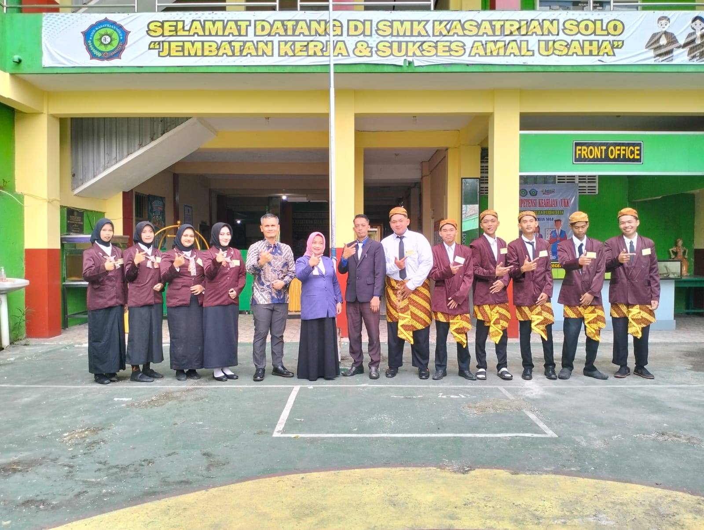
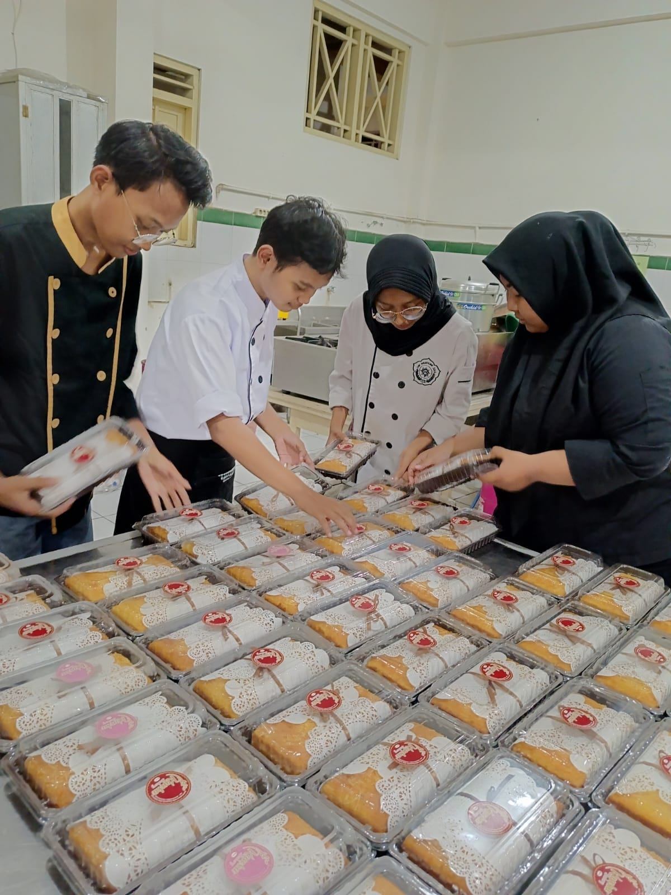
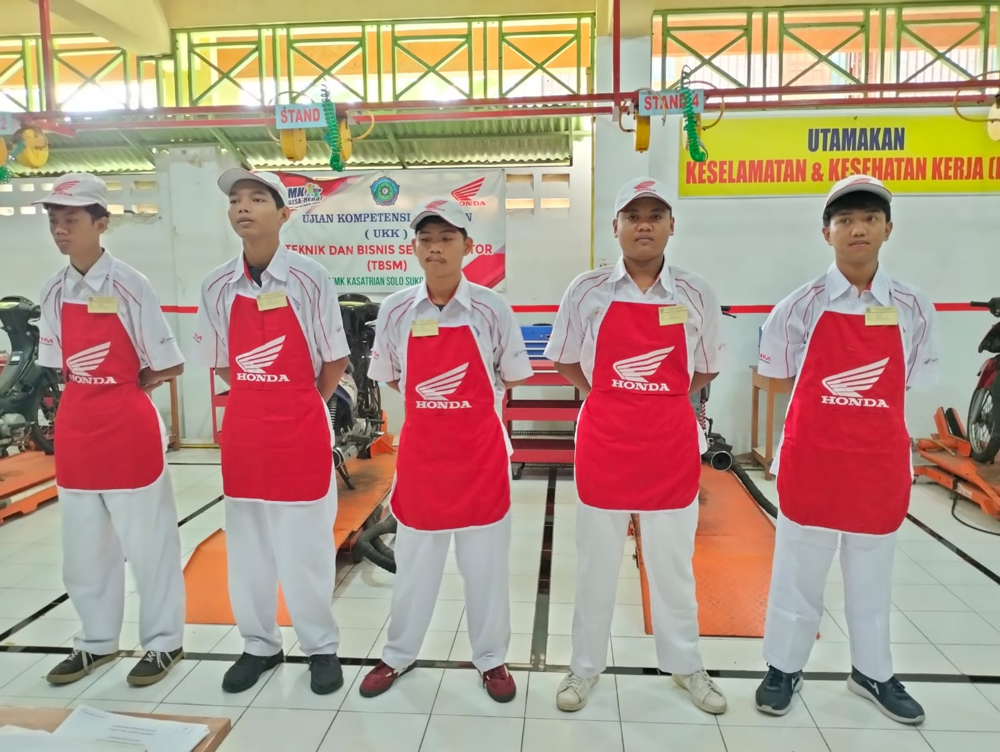

Kelas Industri CV. Relasi Jaya
Teknik Komputer & Jaringan
Administrator jaringan, Mikrotik, Cisco, Cybersecurity, Server Management, Cloud Computing, & Maintenance Perangkat IT.



Kelas Industri the Amrani Syariah Hotel
Perhotelan
Front Office, Housekeeping, Public Relation, Hotel Management, & Service Hospitality Berstandar Hotel Berbintang.



Kelas Industri Kasoka Cafe & Resto
Jasa Boga (Kuliner)
Seni Memasak Modern & Tradisional, Pastry & Bakery, Tata Hidang (Food Plating), Barista, & Management Restoran.



Kelas Industri PT AHM Jawa Tengah
Teknik Sepeda Motor (Otomotif)
Perawatan Mesin Injeksi PGM-FI, Diagnosa Sistem Kelistrikan Modern, Overhaul, & Manajemen Otomotif Standar AHASS.